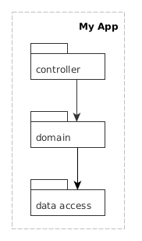
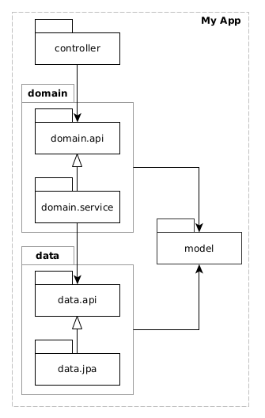

ENRIQUE MOLINARI

¿Qué entendemos por
Arquitectura de Sofware?
Veamos algunas definiciones...
Technical Report: An Introduction to Software Architecture (Shaw y Garlan, 1994)
As the size and complexity of software systems increases, the design problem goes beyond the algorithms and data structures of the computation: designing and specifying the overall system structure emerges as a new kind of problem.
Technical Report: An Introduction to Software Architecture (Shaw y Garlan, 1994)
Structural issues includes: protocols for communication, synchronization and data access; assignment of functionality to design elements; physical distribution; composition of design elements; scaling and performance; and selection among design alternatives. This is the software architecture level of design
Grady Booch
All architecture is design, but not all design is architecture
Architecture represents the significant design decisions that shape a system, where significant is measured by cost of change.
Grady Booch
All architecture is design, but not all design is architecture
Architecture represents the significant design decisions that shape a system, where significant is measured by cost of change.

Software Architecture in Practice (3era Edición, 2012)
The software architecture of a system is the set of structures needed to reason about the system, which comprises software elements, relations among them, and properties of both.
Software Architecture in Practice (3era Edición, 2012)
The software architecture of a system is the set of structure needed to reason about the system, which comprises software elements, relations among them, and properties of both.

Bob Martin (Clean Architecture Book, 2017)
Software architecture is the art of drawing lines that I call boundaries. Those boundaries separate software elements from one another, and restrict those on one side from knowing about those on the other.
Bob Martin (Clean Architecture Book, 2017)
Software architecture is the art of drawing lines that I call boundaries. Those boundaries separate software elements from one another, and restrict those on one side from knowing about those on the other.

Ralph Johnson
Architecture is about the important stuff. Whatever that is.
Ralph Johnson
Architecture is about the important stuff. Whatever that is.
Martin Fowler (2002)
The software industry delights in taking words and stretching them into a myriad of subtly contradictory meanings. One of the biggest sufferers is "architecture". I tend to look at “architecture” as one of those impressive-sounding words, used primarily to indicate that we’re talking something that’s important. But I’m pragmatic enough not to let my cynicism get in the way of attracting people to my book. :-).
Martin Fowler (2002)
“Architecture” is a term that lots of people try to define, with little agreement. There are two common elements: One is the highest-level breakdown of a system into its parts; the other, decisions that are hard to change.
Software Architecture Fundamentals (2020)
The industry as a whole has struggled to precisely define "software architecture". Some architects refer to software architecture as the blueprint of the system. The issue with these common definitions is understanding what the blueprint actually contains.
What is analyzed when an architect analyzes an architecture?
Software Architecture Fundamentals (2020)
Software architecture consists of the structure of the system, combined with architecture characteristics the system must support, architecture decisions, and finally design principles.

Software Architecture Fundamentals (2020)
-
Structure of the system: The architecture style (Layered, Modular, etc).
-
Architecture characteristics: También conocidos como Quality Atributes o Requerimientos No Funcionales. Ejemplo: Scalability.
-
Architecture decisions: Ejemplo: Solo la capa de negocios puede hablar con la capa de persistencia.
-
Design Principles: Consejos (guidelines) mas que reglas que debemos respetar. Por ejemplo, utilzación de comunicación asíncrona por sobre la síncrona.
¿Mareados?
Arquitectura de Software es lo que Uds decidan, segun que autor les gusta más.
¿Quizás representa muchas cosas y por eso cuesta encontrar una única definición?
¿Qué decimos que es en esta materia?
- Tiene que ver con cómo estructuramos u organizamos el sistema a nivel lógico y a nivel físico.
- Estructuramos u organizamos un sistema identificando sus elementos y especificando como se relacionan entre ellos.
¿Qué decimos que es en esta materia?
- A nivel lógico (Arquitectura Lógica) tenemos elementos de software como las funciones, métodos, clases, los paquetes, lo módulos, las capas (layers). Se comunican de la forma in-process.
- A nivel físico (Arquitectura Física) tenemos elementos en runtime (procesos), y la forma en que los deployamos en HW. Sé comunican de la forma inter-process.
¿Qué decimos que es en esta materia?
- Estructuramos u organizamos un sistema de cierta forma con el objetivos de cumplir con Atributos de Calidad específicos (modificabilidad, escalabilidad, disponibilidad, seguridad, etc).
- Finalmente, a dicha estructura le agregamos desiciones de arquitectura (o design decisions) que debemos garantizar sean cumplidas.
Ilustremos ésta definición
- Supongamos una aplicación Web con un back-end Web en SpringBoot y un front-end en React.
- Con eso ya tenemos nuestra primera definición de arquitectura física.
- Atributo de Calidad: Modificabilidad. Me permite distribuir desarrollo de front-end vs back-end y avanzar en paralelo sin grandes pérdidas de tiempo en comunicación entre equipos.
Arquitectura Física
Arquitectura Física
Arquitectura Física (Deployment)

Arquitectura Física (Deployment, opción 2)
Atributo de Calidad: Escalabilidad. Me permite escalar (asignar mas HW) en forma independiente.
Ilustremos ésta definición
- ¿Y qué organización lógica le quiero dar a mi back-end?
- La más simple y conocida por todos: capas.

Ilustremos ésta definición
- Con esta organización lógica ya tenemos la primer decisión de arquitectura que debemos cumplir.
- Las dependencies entre las capas. Controller no puede acceder directamente a la capa de Acceso a Datos.
Arquitectura de Software: repasemos
- Estructura u organización física: Procesos (aplicaciones en runtime) y Deployment
- Estructura u organización lógica: Capas, Módulos (paquetes en Java, las clases tienen mucho detalle). Con una API pública definida y su implementación privada.
- Organizamos los elementos de una arquitectura para cumplir ciertos atributos de calidad.
- Definimos Decisiones de Arquitectura que debemos cumplir.
"Just as good programmers recognized useful data structures in the late 1960s, good software system designers now recognize useful system organizations". - David Garlan and Mary Shaw (1994)
¿Qué tienen en común los estilos de arquitectura?
Definen un conjunto de decisiones de arquitectura que como equipo de desarrollo debemos respetar, sin excepciones.
Estilos y posibilidades conocidas para la organización lógica.
Organización Lógica
¿Por qué debemos preocuparnos por organizar el código de una aplicación?
- Sin ningun tipo de organización definida con el tiempo dejamos de tener noción de que parte del sistema afectamos cuando hacemos un cambio. Supera ampliamente nuestra capacidad cognitiva.
- La organización entonces tiene que ver con partir la aplicación en "pequeñas aplicaciones" más simples, idealmente que puedan caber en nuestra capacidad cognitiva.
- También necesitamos definir como éstas "pequeñas aplicaciones" se relacionan o se comunican entre ellas.
Organización Lógica
- "Pequeñas aplicaciones": Capas, módulos, sub-sistemas.
- ¿Existe en Java la keyword Layer?, ¿module? ¿sub-sistema?
- Debemos encontrar en el lenguaje de programación que utilicemos, que abstracción (estructura sintáctica) podemos utilizar para crear éstas partes. Las clases tienen demasiado detalle
- ¿Cuáles son las opciones en Java?
- Desde Java v1, los paquetes. Java v9 incorporó la construcción sintáctica module.
Organización Lógica
Ok. Tenemos los paquetes para estructurar una aplicación. ¿Qué alternativas o estilos tengo?
Layered Architecture
Partición Horizontal - Respecto de cuestiones técnicas
Package by Layers Clásica
Package by Layers Clásica

Package by Layers (con modelo compartido)
Potencial Problema con Layered Architecture
El problema es que con el tiempo suele pasar esto...
Potencial Problema con Layered Architecture
¿y... acá? Pierdo noción...
Potencial Problema con Layered Architecture
¿y si primero parto en forma vertical?
Package by feature

Organización Lógica
- Partición Horizontal: Segun cuestiones técnicas
- Partición Vertical: Segun funcionalidad.
- Partición Vertical: No confundir... No es una entidad y su CRUD.
- Partición Vertical: Comprende un grupo de funcionalides relacionadas/cohesivas.
- Por ejemplo: Login, authentication y authorization, Catálogo de Productos, Compras/Ventas, Ranking, Notificaciones, etc.
Arquitectura Hexagonal (o ports and adapters)

Package by Component

Estilos y posibilidades conocidas para la organización Física de un sistema.
Organización Física
- Ya habiamos tomado una primera decisión de organización física separando el back-end del front-end.
Organización Física
- Estilo de Arquitectura conocido como N-Tier Architecture.
- Layers vs Tiers: lógico vs físico.
Organización Física
- Vamos un poco más arriesgados ahora, hablemos de organización física del back-end.
Estilos de Organización Física
- Si tomaramos este back-end con su estructura lógica y la deployamos como un único artefacto donde sus elementos lógicos se comunican de la forma in-process, decimos que tenemos un back-end monolítico (o monolítico modular).
- Por otro lado, es posible también, tomar la organización lógica de nuestro back-end y transformarlo en una organización física. Separando los elementos físicamente, y deployándolos como artefactos independientes que se comunican de la forma inter-process. Aquí tenemos un back-end distribuído.
Back-end organizado en layers lógicos (2-Tier Arch.)
Back-end distribuído 3-Tier Arch.
Back-end distribuído 3-Tier Arch.
- Gano en escalabilidad. Puedo escalar de forma difirente las capas de acceso a datos vs la de negocios. Puedo partir el trabajo en diferentes equipos (generalmente multi-repo). Independencia de tecnologías.
- Pierdo en complejidad, monitoriabilidad. Las comunicaciones que antes eran in-process ahora son inter-process. La Tx ahora es responsabilidad del acceso a datos. Logs de mi back-end creado por diferentes procesos.
- Veamos otras opciones...
Organización lógica by-feature
Creemos separación física a partir de la organización lógica.
Microservicios
- Servicios auto-contenidos (o lo más posible) con partición funcional (o vertical) física de todo el stack, incluído los datos.
- Desarrollado y deployado de forma independiente.
- Auto-contenidos: Evitar que se hablen mucho entre ellos (chatty anti-pattern).
- Event-based: idealmente utilizan comunicación asíncrona.
- Decisión de Arquitectura de éste estilo: No pueden acceder a la BD de otro Microservicio.
Microservicios: Ejemplo
- Supongamos los requerimientos de catálogo de películas y carrito de compras.
- Supongamos ahora que implementamos cada uno como un microservicio.
- Productos: Debe mostrar una lista paginada de peliculas: nombre, precio, actores, directores, etc.
- Carrito: Debe mostrar las peliculas agregadas. Nombre Pelicula, Precio, Cantidad, Fecha.
- ¿Cómo lo resolvemos?
Microservicios: Ejemplo
- Usando comunicación sincrónica es simple. Pero el carrito ya no seria auto-contenido. Tengo una penalidad en la performance (el join en una aplicación + request de red adicional).
- Usando comunicación asincrónica el carrito es auto-contenido y performa mejor. Pero tengo mas complejidad, tengo que mantener más infra. Consistencia eventual vs Consistencia fuerte (nombre vs precio).